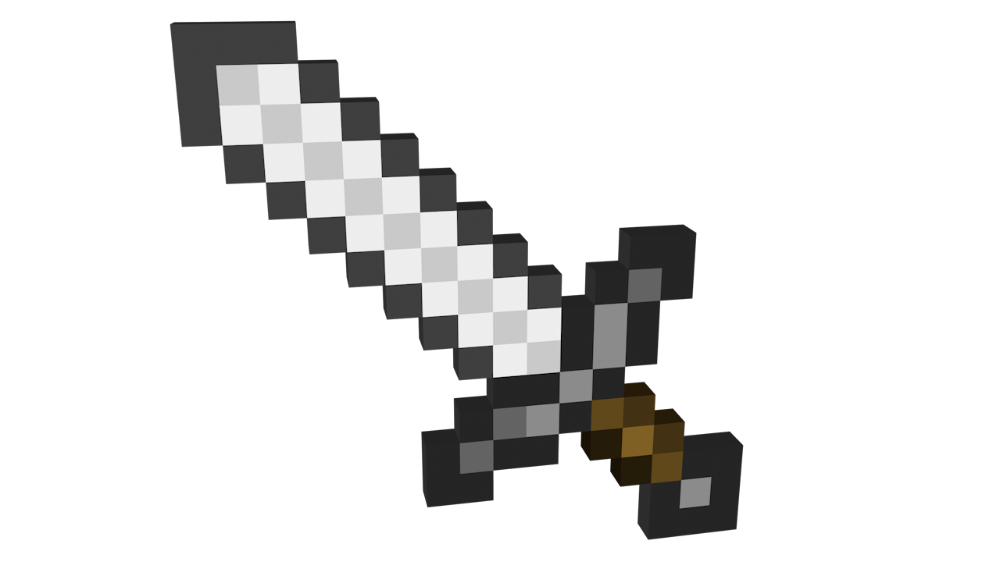

| РК "Сломанная лыжа"  | |
|---|---|
Хотелось ли Вам когда-нибудь оказаться в Средневековье, или даже в Средиземье, месте действия книг Дж.Р.Р. Толкиена "Властелин колец"? Тогда Вы пришли по адресу! Ролевая игра — это вид драматического действия, участники которого действуют в рамках выбранных ими ролей. То как будут развиваться события, зависит именно от действий игроков. Таким образом, сам процесс игры представляет собой моделирование группой людей той или иной ситуации. Каждый из них ведет себя, как хочет, играя за своего персонажа. Наш клуб осуществляет подготовку к ролевым играм и выезд на них. С нами вы можете научиться пользоваться мечом или луком, побывать в шкуре орка или познакомиться с прекрасной эльфийкой - все в ваших руках! |
Клуб существует уже 19 лет в лице одного участника, и за это время он приобрел широкую известность в узких и очень узких кругах. |
| Меню сайта: | ВНИМАНИЕ! Приглашаем всех желающих посетить тренировку клуба в воскресенье в 12:00. Мы вам будем рады! |
| По любым вопросам звоните или пишите командиру клуба |